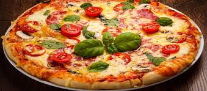

On this page, we have gathered up some sites and information on good food. Check out the links for more information.
Best Food

The number one world cusine is Italy! A fun fact about Italy is that it is known for it's pizza.
Here are some amazing thai restaurants you can find throughout the US!
Thai restaurants
This is a thai meal!
For those who are vegetarians, don't worry. The United States has a variety of foods for you, make yourself comfy and get ready for a feast!

A salad is a vegetarian option and you can get many varieties of salad at Greens in Los Angeles, California!
Here in the US, we have many fast food places and resturaunts for all cusines, here is a list of them that you should absolutely try out!
McDonalds
In this fast food restaurant, you will find differnent kinds of burgers, not many vegetarian options but it's a famous, quick, and a great to go place!
Check out more on their website.
This image is a regular meal at McDonalds!
Starbucks
This shop is more known for their drinks such as coffees, fraps, capps, and more! They have various types of snacks as well - sweet and salty!!
Check out more on the website.
These are a couple of coffees that you can get on Starbucks Fall Menu!
Din Tai Fung
This restaurant can be known as a dumpling house, they will have many different types - veggie or meat! Other than dumplings they have many other meals!
Check out more on the website.
This is a meal that you can get at Din Tai Fung!